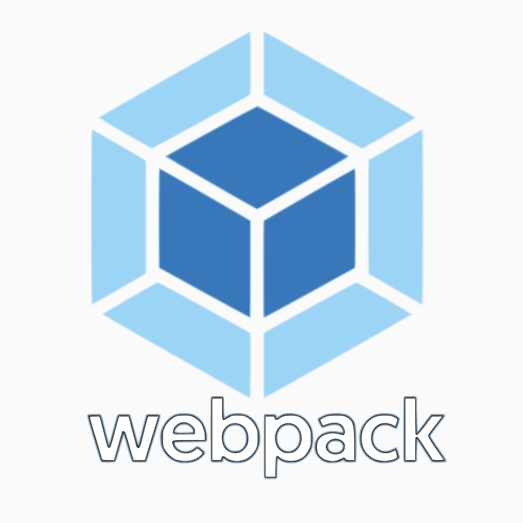
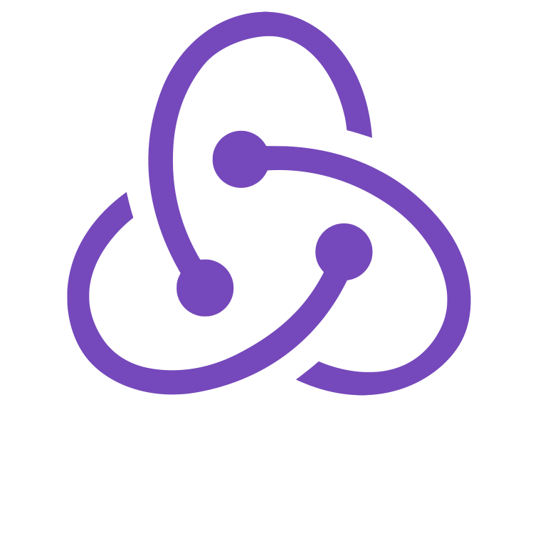

Welcome to my page






English
About Me
what I do professionally is to provide technical solutions to a wide spectrum of possible requests in the IT environment and beyond. I'm pretty good at this, because I'm very curious, deeply interested in technology and not least, I do read the documentation. In short, I worked years in civil engineering dealing with machine programming, three-dimensional modeling and prototyping. Later I worked for several years with Applecare as a remote helpdesk and as a professional trainer in different countries.
Why Code
I like to write code because I see it as a particularly interesting tool to apply creativity, I mean, you can potentially do anything.
What I Code
Narrowing down from everything to something professionally applicable, I am interested in data management, CRUD operations and consequently interactions with databases, construction of customized user interfaces, in order to make these operations accessible according to specific needs.
Projects
At the moment my attention is focused on the interaction between client and server, in particular on the MERN stack that I used in various projects such as shopping carts, registries, columns, information archives of various kinds, all implemented with their own CRUD functions, reporting , logins, interfaces for users and administrators. Se avete a che fare con richiesta, manipolazione e restituzione dati da una parte all'altra, contattatemi. Obviously I have some things loaded on gitHub in case someone wants to take a look. Ah... There is also a Simon Game, it's a little rough but working. It was my first complete project in Javascript.
What I'm interested to develope
At the moment I am exploring different fields of possible application, among which I am particularly interested:
- Communication systems between users.
- Localized services for the internet of things and home automation.
- OpenGL 3D web app for browsers.
- Crittografia e sicurezza dati.
- Data encryption and security.
- Artificial Intelligences
About Coding
I like to write algorithms, but not so much that I want to do it and do it over and over again, so I try to write things that can be easily reconfigured for future reuse. I find it very convenient to use Node and npm, both for the vast amount of software available and for the linux-style package management system, with which I immediately felt at ease from the very biginning I started to use it. I tend to be a functional programmer, but when it's appropriate I don't have problems with the object approach, encapsulation and process automation. How can you resist the charm of objects that create and configure other objects that do things according to the situation?
What I use:
Operative System
Beyond personal preferences, as a programmer I find that using Linux systems makes life easier and allows you to concentrate on writing. It is not a trivial matter to have a tool that natively allows users to run from the terminal, servers, clients and databases, and no longer have to worry about it throughout the session. I have been using Ubuntu for many years after which I switched to Debian from version 9. Installation and transition easier than ever.
Editor
I used Sublime and Atom for a while then I switched to Emacs because of its lightness and responsiveness. Starting from there, I discovered a world.
Languages
I program in Javascript, html and CSS and in the past I used C++ to create specific management systems for small companies. (PHP in todo list)
Platforms
Node and its amazing amount of available packages (npm).
Frameworks
React e Bootstrap to build interfaces (Angular in todo list)
Databases
Mongo, a very convenient choice to pair with Javascript, even considering all the tools that Node provides to perform actions and requests on the database. Among the various options I prefer Mongoose.
Back End
server setup and managenment using Node Express, http-server and other tools.
Front End
user and admin interfaces with React and Redux
Availability
I'm definitely available To focus attention on programming, I switched from a fulltime job to a part-time job and I am totally oriented towards this type of profession, which following different considerations appears to be the best option, especially in the long distance. I can be contacted directly from this page
Italiano
Su di me...
Ciò che faccio professionalmente è fornire soluzioni tecniche ad un ampio spettro di possibili richieste in ambiente IT e non solo. Sono piuttosto bravo in questo, perchè sono molto curioso, profondamente interessato alle tecnologie e non ultimo, leggo la documentazione. In breve, ho lavorato per anni nell'ingegneria civile occupandomi di programmazione macchine, modellazione tridimensionale e prototipazione. Successivamente ho lavorato diversi anni con Applecare come helpdesk remoto e come trainer professionale in diversi paesi.
Perchè programmo
Mi piace scrivere codice perchè lo ritengo uno strumento particolarmente interessante per applicare la propia creatività, voglio dire, potenzialmente si può fare qualunque cosa.
Cosa programmo
Restringendo il campo dal tutto a qualcosa di professionalmente applicabile, mi interesso di gestione dei dati, operazioni CRUD e di conseguenza delle interazioni con i database e costruisco interfacce utente customizzate per poter rendere tali operazioni accessibili a seconda delle esigenze specifiche.
I miei progetti
Al momento la mia attenzione è concentrata sull'interazione tra client e server ed in particolare sullo stack MERN che ho utilizzato in diversi progetti come shopping carts, anagrafiche, rubriche, archivi di informazioni di vario genere, tutti implementati con le proprie funzioni CRUD, reportistica, login, interfacce per utenti ed amministratori. Se avete a che fare con richiesta, manipolazione e restituzione dati da una parte all'altra, contattatemi. Ovviamente ho alcune cose caricate su gitHub nel caso qualcuno volesse dare un'occhiata. Ah... C’è anche un Simon Game, un po’ grezzo ma funzionante. E' stato il mio primo progetto completo in Javascript.
Ciò che mi interessa sviluppare
Al momento sto esplorando diversi settori di possibile applicazione, tra i quali in maniera particolare mi interessano:
- Sistemi di comunicazione tra utenti.
- Servizi localizzati per l’internet of things e la domotica.
- Web app 3D openGL nei browsers.
- Crittografia e sicurezza dati.
- Sviluppo delle applicazioni mobile.
- Intelligenze Artificiali
Sulla programmazione
Mi piace scrivere algoritmi, ma non così tanto da volerlo fare e rifare all’infinito, quindi cerco di scrivere cose che possano essere facilmente riconfigurabili per riutilizzi futuro.
trovo molto conveniente l’utilizzo di Node ed npm, sia per la vastità di software disponibile che per il sistema Linux-style di gestione dei pacchetti, con il quale mi sono trovato immediatamente a mio agio. Tendenzialmente sono un programmatore funzionale, ma quando è opportuno non ho problemi con l'approccio ad oggetti, incapsulamento e automazione dei processi.
Come resistere al fascino di oggetti che creano e configurano altri oggetti che fanno cose a seconda della situazione?
Gli strumenti che utilizzo
Sistemi operativi
Al di la delle preferenze personali, come programmatore trovo che l’utilizzo di sistemi Linux faciliti la vita e permetta di concentrarsi sulla scrittura. Non è da poco avere uno strumento che banalmente permetta di lanciare da un singolo terminale, server, client e database, con un singola linea di comando e non doversene più preoccupare per tutta la sessione. Ho utilizzato Ubuntu per molti anni dopodichè sono passato a Debian dalla versione 9. Installazione e transizione più facile di sempre.
Editor
Ho usato Sublime e Atom per un po’ di tempo poi sono passato ad Emacs per via della sua leggerezza e reattività. Ho scoperto un mondo.
Linguaggi
Javascript, html e CSS ed in passato ho utilizzato C++ per creare gestionali specifici per piccole aziende. (PHP in todo list)
Piattaforme
Node e la quantità incredibile di pacchetti disponibili.
Frameworks
React e Bootstrap per le interfacce (Angular in todo list)
Database
Mongo, scelta più conveniente da accoppiare con Javascript, anche considerando tutti gli strumenti che Node mette a disposizione per eseguire azioni e richieste sul database. Tra le varie opzioni preferisco Mongoose.
Backend
Costruzione server di comunicazione mediante Node Express, http-server.
Front End
creazione interfacce utente mediante React, Redux
Disponibilità
Sono decisamente disponibile Per focalizzare l’attenzione sulla programmazione sono passato da un lavoro fulltime ad un part time e sono totalmente orientato a questo tipo di professione, che a seguito di diverse considerazioni appare l’opzione migliore, specialmente ragionando in prospettiva. Sono contattabile direttamente da questa pagina